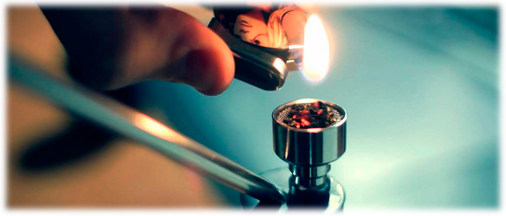

На сегодняшний день употребление, выращивание и распространение конопли запрещено во многих странах мира, Украина и другие страны СНГ не являются исключением. Хотя курение марихуаны запрещено в наших государствах, такую возможность Вы можете найти по миру в других странах прошедших легализацию, и получающих все бонусы от легалайза конопли. Поскольку марихуана это не только получение "кайфа" и "страшный наркотик" как привыкли утверждать органы власти, предлагаем Вам подробнее разобраться в том что такое конопля, какое влияние на человека и общество несет, а главное почему легализация конопли так не выгодна для политиков и крупных корпораций.
Способы употребления и история
Использование конопли берет свое начало еще в древние времена, и первые письменные упоминания о ней находят в китайских писаниях о лекарственных растениях. Исцеляющие свойства конопли, применение ее в быту, ее употребление в пищу и конечно же курение марихуаны (конопли) применялось по всему миру.
Предлагаем просмотреть провокационный фильм о марихуане, запрещенный во многих странах мира, чтобы увидеть альтернативную точку зрения.
Развенчание мифов о вреде
Миф о смертности
Утверждение, что конопля убивает, не имеет научного подтверждения. Не зафиксировано ни одного летального исхода из-за чистого каннабиса. Опасность представляет смешивание с алкоголем или тяжелыми ПАВ.
Миф о «входных воротах»
Теория о том, что трава ведет к тяжелым наркотикам, часто связана с тем, что сбытом занимаются одни и те же дилеры. При легальном доступе этот риск практически исчезает.
Почему запрет выгоден власти и корпорациям?
Фармацевтика
Марихуана лечит десятки заболеваний. Легализация и дешевизна натурального продукта сократили бы прибыли корпораций от химических препаратов.
Политика
Состояние релаксации и единения с миром плохо сочетается с системой жесткого подчинения и военной дисциплиной.
Социум
Осознанность и критическое мышление, приходящие при умеренном употреблении, не выгодны тем, кто управляет обществом через послушание.
Эффекты: Сатива против Индики
Индика (Indica)
Релаксация, расслабление мышц, седативный эффект. Часто используется для борьбы с бессонницей.
Сатива (Sativa)
Энергия, бодрость, стимуляция творческого мышления и активности.
Сравнение способов употребления
Курение (Joint/Pipe)

Самый быстрый эффект. Высокая концентрация ТГК, но вредно для легких из-за продуктов горения.
Вапорайзинг (Vape)
Испарение вместо горения. Гораздо меньше вреда для легких, чистый вкус и более контролируемый дозинг.
Edibles (Еда)
Самый длительный и мощный эффект (до 12 часов). Не вредит легким, но эффект наступает медленно.
🌿 Хотите знать больше?
Перейдите в раздел о лечебных свойствах, чтобы узнать, как каннабис помогает в медицине.
Лечебные свойства